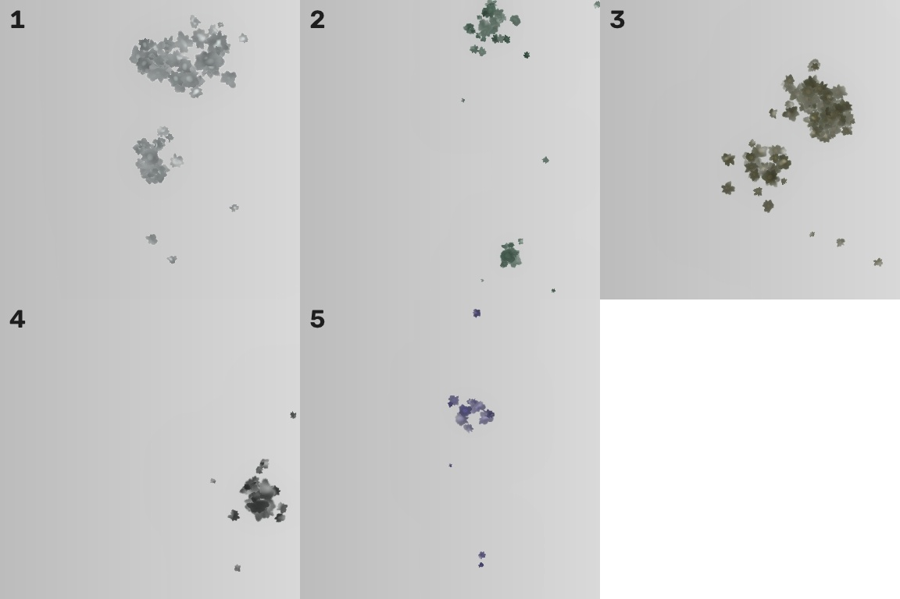
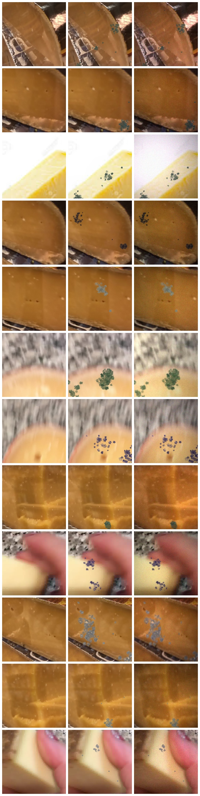
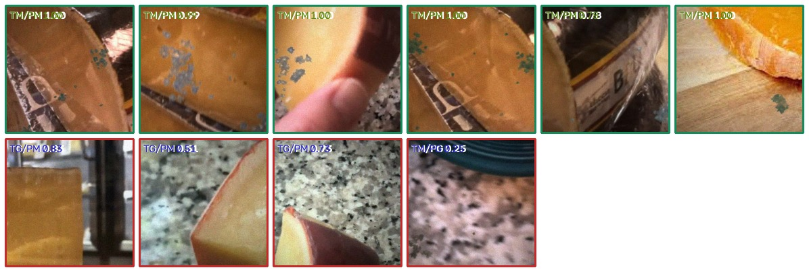

在最大可获取的公开奶酪图像集上，合成污染霉菌并叠加工业相机成像退化，训练二分类模型；80/20 分组划分 + 5 折分组交叉验证。
选型标准是"公开可下载 + 奶酪专属 + 样本量最大"。
| 数据集 | 规模 | 说明 |
|---|---|---|
| All The Cheese Kaggle · jenlooper/cheese |
1684 样本 源自 830 张原图 |
3234 张照片、按表皮工艺分 6 类，是当前可公开下载的奶酪图像集中样本量最大的一个。保留了 hard / semi-soft / fresh / washed-rind 四类（共 830 张）作为"正常奶酪"基底；排除 blue 与 bloomy——蓝纹与白霉外皮的"霉"是工艺的一部分，若纳入会让标签自相矛盾。 |
| Kaggle · cheese-pics | 33.8 GB | 体积最大的奶酪图像集，但单连接带宽下无法在本次实验中拉取，且无类别标注。 |
| Zenodo · 奶酪后熟 RGB | 217 张 | 质量最高（3872×2592、逐日时序、CC BY），但样本量不足，仅作为外观参考。 |
依据文献与权威科普归纳的污染型霉菌外观特征来建模，而不是随便撒几个绿点。
| 外观特征 | 在合成中的实现 |
|---|---|
| 形态 | 绒毛状 / 粉末状菌落，簇状聚集（1–3 个菌落簇，每簇 6–26 个单菌落 + 零散卫星斑点），而非均匀噪点 |
| 颜色谱 | 灰白（青霉）、橄榄绿、蓝绿（Penicillium commune）、墨绿近黑（Aspergillus）、偶见粉红/红褐；按 0.30/0.30/0.20/0.12/0.08 加权抽样，每张图只取一种主色 |
| 水平结构 | 中心致密色深 → 外缘白色绒毛状晕圈；用"角度域周期性随机半径场"生成不规则轮廓，多尺度 fbm 噪声做绒毛边缘 |
| 立体感 | 以菌落掩膜作高度场、做高斯模糊后求差，近似朗伯受光——边缘因绒毛而变亮，产生轻微凸起观感 |
| 周边反应 | 菌落外叠一圈"潮湿晕"：表皮发暗、微微发灰绿（霉菌分泌酶使表层失水变色） |
| 空间分布 | 以局部纹理方差为采样权重，优先长在褶皱、划痕、低洼处；并用亮度阈值限定只在奶酪本体上生长，绝不落到背景 |


关键设计约束——噪声必须与标签无关，否则模型会去学噪声而不是学霉斑。
① 非均匀光照（灯位偏移 ±20%）与暗角；② 色温漂移（R/B 增益 0.93–1.09）；③ 离焦 σ≤1.15；④ 25% 概率运动模糊；⑤ 相机 tone 曲线（γ 0.90–1.14）；⑥ 泊松散粒噪声 + 高斯读出噪声（σ 1.2–7.5）；⑦ JPEG 压缩（质量 48–94）。
每张原图切两个互不重叠的 crop，随机一个合成霉菌、另一个保持正常。两类来自同一批原始照片，光照、背景、相机参数分布完全对齐——模型想拿高分只能依赖局部表面证据，不能靠"这张照片看起来像另一批数据"。
| 项目 | 设置 |
|---|---|
| 划分 | 按原图分组（GroupShuffleSplit）划出 20% 测试集（166 张原图 / 338 个样本），其余 80%（664 张原图 / 1346 个样本）用于训练与验证。同一张原图的两个 crop 永远落在同一侧，避免同源泄漏。 |
| 训练与验证协议 | 按原图分组划出 20% 测试集后，在 80% 训练集上一次训练到位（不做 K 折），轮数由一次单折验证实验事先固定，训练完直接在测试集上评估一次。 另外做了一次单折抽检（用 531/664 张原图训练、133 张原图验证）作为独立复核，见下节。 |
| CNN 输入表示 | 4 通道：RGB 三通道 + 一通道霉菌响应图 m = 0.55·clip((med(b*)−b*)/32) + 0.30·clip(1−S/(med(S)+25)) + 0.40·clip((med(L)−L)/55)。第 4 通道与传统方法用的是同一个先验，所以两条路线共享同一份领域知识——比较的其实是"先验之后怎么办"：手工阈值化 vs 端到端学习。 |
| CNN 结构 | 紧凑 CNN：stem(/2) + 3 个下采样卷积块（24/48/96/160 通道）+ 1 个膨胀卷积块（192 通道），SiLU + BN；池化头用 avg+max 拼接——霉斑平均只占 2.8% 面积，全局平均池化会把这点响应直接稀释掉。输入 224×224，从零训练（不加载 ImageNet 权重，产线部署常无外网/无 GPU）。 |
| 训练配置 | AdamW（lr 1.2e-3，wd 1e-3），warmup + 余弦退火，label smoothing 0.03。增广：随机裁剪缩放(0.85–1.0)、水平/垂直翻转、±12° 旋转、亮度对比度与通道增益扰动、附加高斯噪声与轻微离焦。裁剪幅度刻意收紧——过猛的缩放会把霉斑整块裁出画面，等于给"发霉"样本贴上"正常"标签。推理用水平翻转 TTA（固定配置，未针对测试集调参）。 |
| 传统 OpenCV | 425 维手工特征：颜色统计 + HSV/Lab 直方图 + 霉菌响应图（"奶酪偏黄、霉菌偏绿青灰黑"的先验构造）与斑块形态学 + LBP + GLCM(4 方向×6 统计量) + Gabor(4 方向×3 波长) + 梯度/边缘密度；分类器在 SVM-RBF / RandomForest / ExtraTrees / LogisticRegression 中按 5 折 F1 选优。 |
| 验证方式 | 准确率 | F1 | AUC |
|---|---|---|---|
| 单折抽检 fold0 | 0.9710 | 0.9706 | 0.9887 |
单折抽检用的是 531/664 张原图训练、133 张原图（约 270 样本）验证，数据量只有最终模型的 80%，所以它的分数是最终结果的一个偏保守参照，不是替代。
| 指标 | CNN | OpenCV + RandomForest |
|---|---|---|
| 准确率 Accuracy | 0.9882 | 0.8639 |
| 精确率 Precision | 0.9825 | 0.8475 |
| 召回率 Recall | 0.9941 | 0.8876 |
| F1 | 0.9882 | 0.8671 |
| AUC | 0.9992 | 0.9159 |
| 混淆矩阵 | TP 168 / FN 1 / FP 3 / TN 166 | TP 150 / FN 19 / FP 27 / TN 142 |
| 分类器 | 5 折准确率 | 5 折 F1 | 5 折 AUC |
|---|---|---|---|
| SVM-RBF | 0.7561 | 0.7435 ± 0.0332 | 0.8473 |
| RandomForest · 选中 | 0.8110 | 0.8131 ± 0.0373 | 0.8957 |
| ExtraTrees | 0.7827 | 0.7871 ± 0.0384 | 0.8709 |
| LogReg | 0.7578 | 0.7535 ± 0.0305 | 0.8220 |

| 文件 | 作用 |
|---|---|
code/mold_synth.py | 霉菌合成 + 相机成像退化（可独立调用 apply_mold / camera_simulate） |
code/prepare_dataset.py | 解压数据集、切 crop、成对合成霉菌、输出 manifest.csv |
code/make_splits.py | 生成 80/20 分组划分与 5 折 GroupKFold（两个模型共用，保证可比） |
code/train_cnn_v3.py | CNN 五折 + 全量重训 + 测试集评估（最终模型；--no-prior 可跑无先验消融） |
code/train_cnn_v2.py | 消融：224 输入 / avg+max 池化，但不给先验通道 |
code/train_classic.py | OpenCV 手工特征 + 四种分类器比较 + 测试集评估 |
code/infer.py | 单图 / 批量推理（两个模型都能跑） |